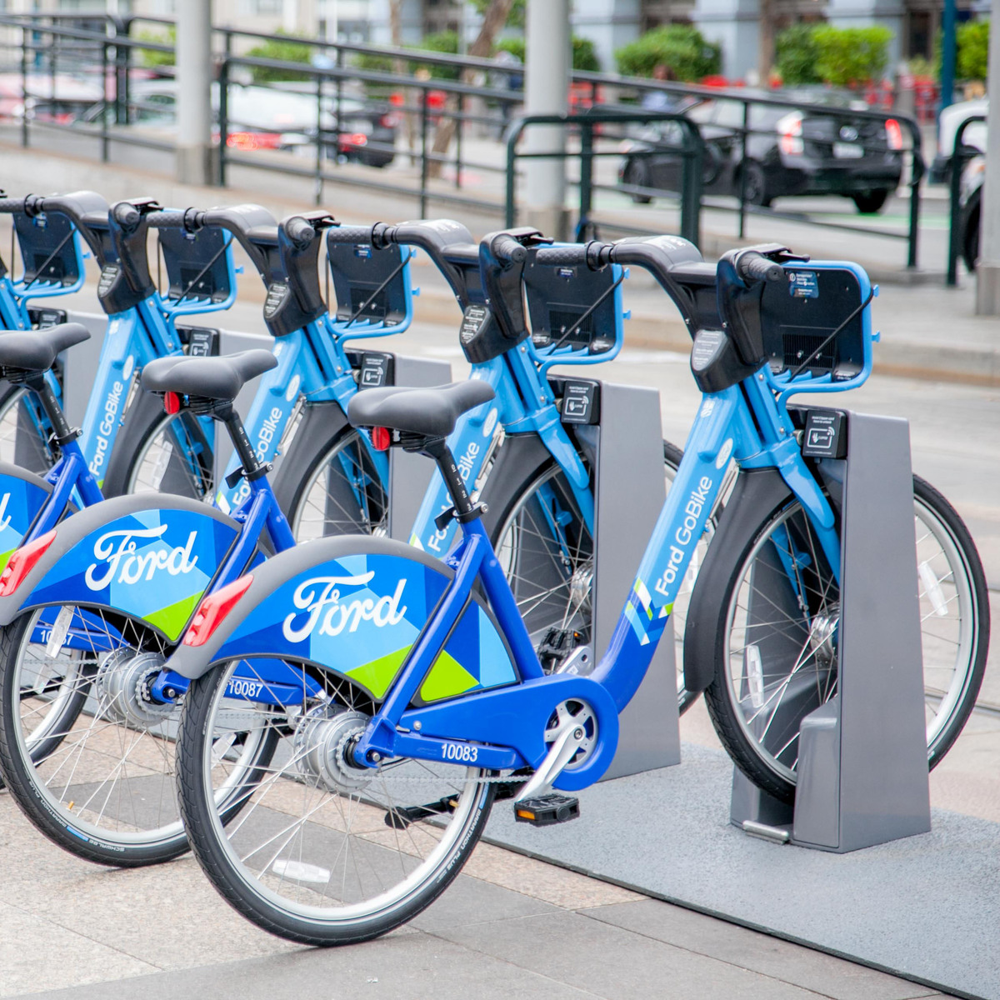
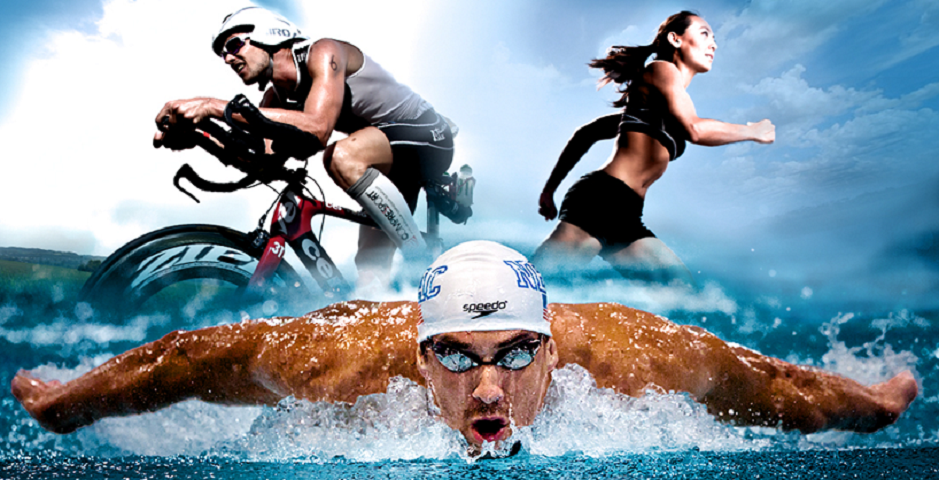
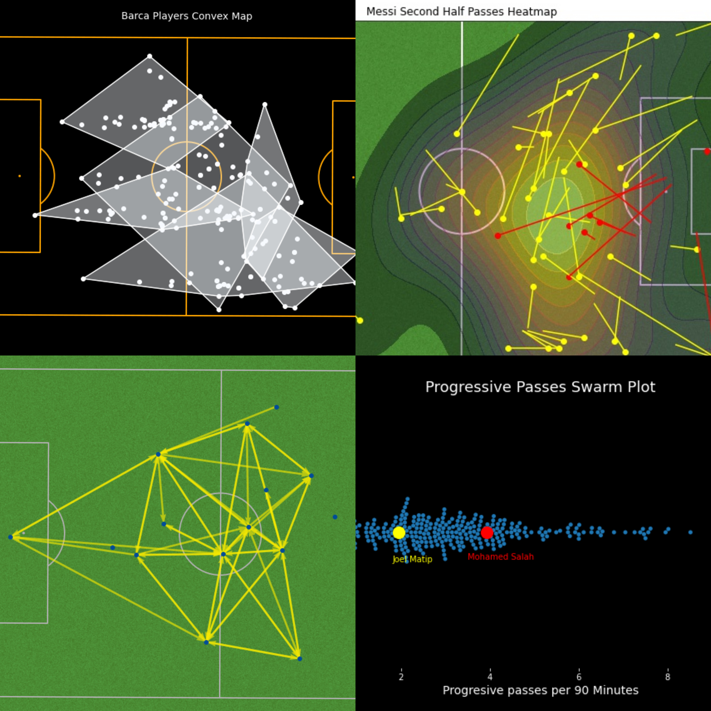

I have a passion for data analytics and visualization, and I enjoy finding patterns in data and accurately reporting, then resolving and simplifying problems to their root causes, to facilitate correct data-driven decisions.
What drew me to data analysis was its ability to look at both the big picture and small details simultaneously. Using messy data, I analyze the data, create graphs, then develop reports, notebooks, and presentations to communicate my descriptive findings.
I enjoy exploring various datasets creating analytic reports and visualizations, especially in the sports field. I also love developing interactive business analytics dashboards

This data set represents trips taken by members of the Ford Go Bike service for month of February of 2019. Data consists of 183412 rows and 16 columns of info about trips taken by service's members, their types, their age, their gender, stations of starting and ending trips, duration of trips.
This project we explore - The Movie Database (TMDb) - dataset which contains information about 10,000+ movies including user ratings, budgets and revenues and much more....

In this project we explore the dataset of All IronMan Triathlon World championship winners in Hawaii. From Year 1978 to 2019. Many Iconic names, numbers and moments that defined the history of the sport.
Analyze the legendary Titanic passenger dataset to determine which classification model best predicts whether or not passengers survived based on their attributes (name, age, gender, socioeconomic status, etc).

Explore and use Washington DC historic bike rental data to predict and forecast the total count/demand of bikes rented.

I used Python to explore and visualize football matches data, I created various performance analysis plots such as (Heat maps, Shot maps, Passing Networks, Radar plots). I used Machine-learning to predict team ranks based on their collected points and their goals difference.